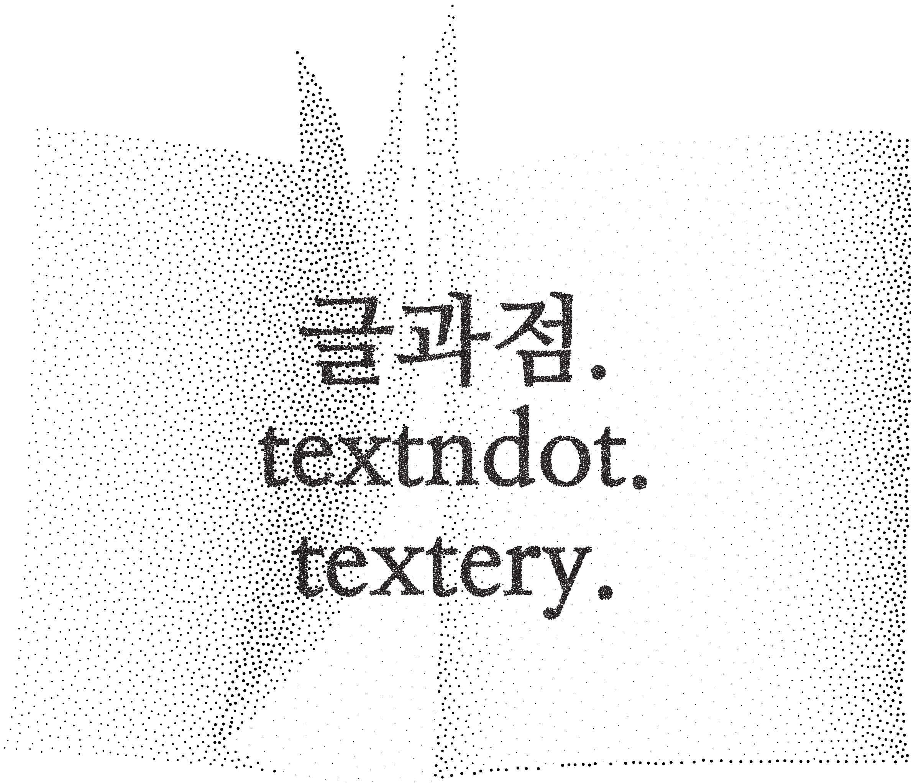

기존의 글에서 추출하거나 직접 기술한 ‘한 문장(
sentence
)’은 작업의 출발점이 되어, ‘작가(
author
)’들의 독립적인 한 문장이 모두 모였을 때 하나의 ‘단락(
paragraph
)’을 구성합니다.
만들어진 단락은 문맥상 연결되지 않지만, 이로 인해 역설적으로 작가 개인의 한 문장 자체에 주목하게 됩니다. 동시에 단락은 전시의 ‘제목(
title
)’이 되어 모든 작가의 문장을 왜곡 없이 포괄합니다.
‘한 문장’을 통해 작가들의 ‘작품(
artwork
)’ 하나하나에 주목하며, ‘단락’으로 통일된 시각 아이덴티티를 가진 ‘전시(
exhibition
)’를 선보입니다.
×
‘기역기역’은 전시 기획 동아리로, 디자인 전공생이 모여 전시, 워크숍, 월간지 발행 등 디자인과 관련된 다양한 활동을 기획 하는 팀입니다.
instagram
@77_archive
facebook
@77official77
Tumblbug
How to visit